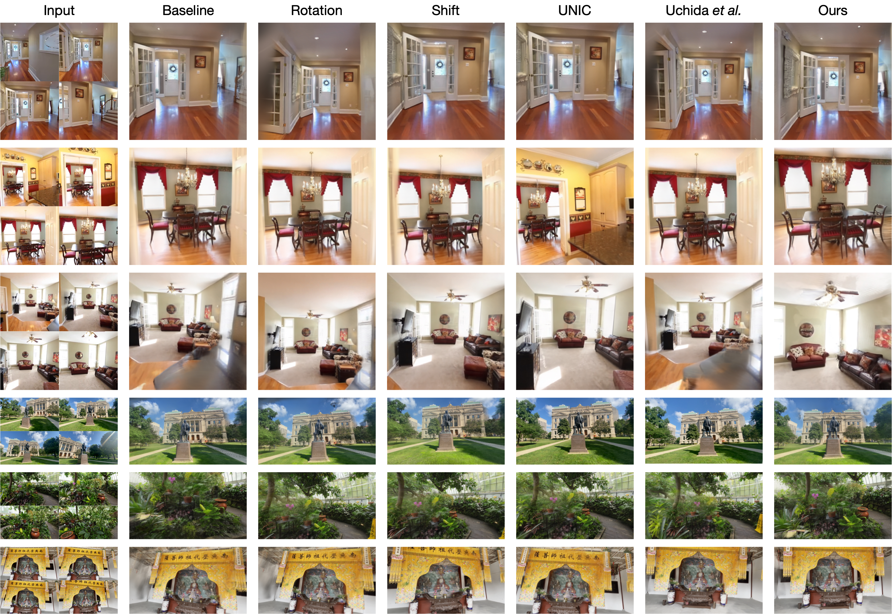
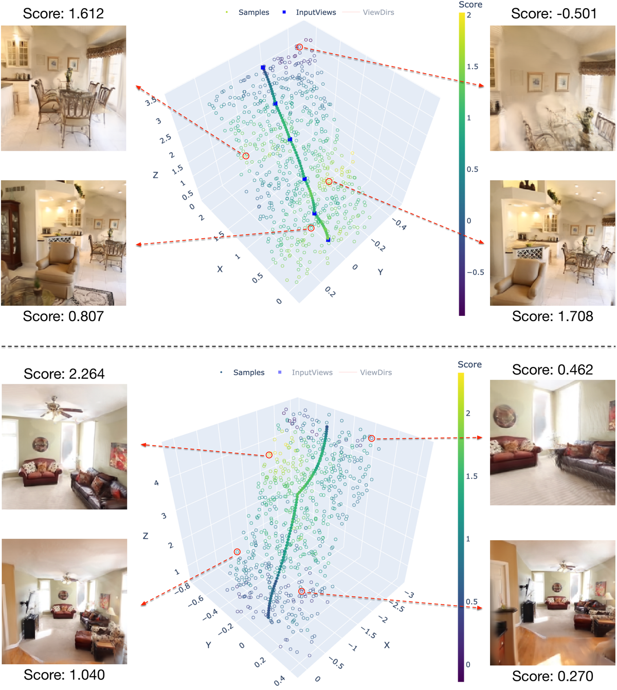

Aesthetic
简单摘要
场景的美学质量很大程度上取决于相机的视角。在这项工作中，我们引入了 3D 美学场的概念，它可以通过稀疏捕获在 3D 中进行基于几何的美学推理，从而与昂贵的 RL 搜索相比，允许有效的观点建议。

这些限制需要一种解决方案，以减轻对密集捕获的依赖，并实现有效的美学推理，而无需在现实世界中进行迭代的物理调整。为了解决这些限制，我们建议通过学习 3D 美学领域，将审美感知与 3D 几何理解统一起来，从而能够从稀疏观察中有效推断场景美学。
核心创新
第一，在这项工作中，我们引入了 3D 美学场的概念，它可以通过稀疏捕获在 3D 中进行基于几何的美学推理，从而与昂贵的 RL 搜索相比，允许有效的观点建议。
第二，在此领域的基础上，我们提出了一个两阶段搜索管道，将粗视点采样与基于梯度的细化相结合。
第三，由于直接优化很棘手，因为它需要来回 2D 投影和评估，因此我们建议通过学习 3D 美学领域来近似这一目标。
技术细节
为了学习这个领域，我们将美学知识从预训练的 2D 美学模型中提取到前馈高斯 Splatting 框架中，以从稀疏输入中重建每高斯几何和美学特征。蒸馏场能够以新颖的视角呈现美学特征，这些特征由美学解码器进行评估，以评估框架和构图。如图：framework所示，在backbone之上，我们引入了轻量级的美学模块。


3.1 提炼3D美学领域
新颖的视图图像可以通过高斯溅射从 3D 高斯渲染。考虑到前馈高斯泼溅骨干，视点建议的一个直接解决方案是渲染新颖的视图并使用预训练的美学模型直接对其进行评分。如图：framework所示，在backbone之上，我们引入了轻量级的美学模块。
3.2 观点搜索管道
学习到的 3D 美学领域提供了从相机姿势到美学分数的连续且可微分的映射，从而实现了视点空间中的高效搜索和优化。每个候选视点通过审美场进行渲染以获得其审美特征，由审美解码器对其进行评估以产生分数。在实践中，我们优化了包含 3D 平移和两个旋转变量（偏航和俯仰）的 5 维矢量，因为在典型的场景捕获中很少调整滚动。
$$ \mathbf P^* = \arg\max_\mathbf P score(\mathbf P). $$
这条式子给出了论文中的一条核心计算关系。理解时重点看左侧最终输出是什么，以及右侧各部分分别承担什么作用。
$$ \mathbf P_{t+1}=\mathbf P_{t} + \eta \nabla_{\mathbf P}score(\mathbf P_{t}), $$
这条式子给出了论文中的一条核心计算关系。理解时重点看左侧最终输出是什么，以及右侧各部分分别承担什么作用。
实验结论
实验部分主要围绕 具体来说，我们将预测的审美分数与教师审美模型的真实分数进行比较，并根据 RGB 评分基线进行基准测试 展开。结果表明，此外，教师分数本身会在几乎相同的构图的附近真实视图中波动。
| RE10k | ||||||
|---|---|---|---|---|---|---|
| Methods | 2 Input Views | 4 Input Views | 6 Input Views | |||
| VEN | SAMPNet | VEN | SAMPNet | VEN | SAMPNet | |
| Baseline | 1.48 | 2.29 | 1.79 | 2.26 | 2.01 | 2.29 |
| In-plane Shift ^ | 1.52 | 2.31 | 1.81 | 2.36 | 2.10 | 2.41 |
| Rotation ^ | 1.78 | 2.38 | 1.95 | 2.42 | 2.13 | 2.45 |
| UNIC ^ | 1.15 | 2.17 | 1.61 | 2.33 | 1.82 | 2.35 |
| Uchida ^ | 1.58 | 2.32 | 1.89 | 2.37 | 2.13 | 2.42 |
| Ours | 1.89 | 2.40 | 2.03 | 2.45 | 2.20 | 2.49 |
| DL3DV | ||||||
| Methods | RE10k | DL3DV | ||
|---|---|---|---|---|
| SRCC | SRCC | |||
| w/o. view-cond. | 0.732 | 0.695 | 0.658 | 0.625 |
| w. view-cond. | 0.796 | 0.758 | 0.700 | 0.668 |





4.1 实验设置
实验部分主要围绕 RE10k主要包含室内视频，而DL3DV涉及更多样化的场景 展开。结果表明，我们在 Pytorch 中实现我们的框架，使用 DepthSplat 作为前馈高斯 Splatting 主干。
4.2 新颖视角下的审美预测
实验部分主要围绕 具体来说，我们将预测的审美分数与教师审美模型的真实分数进行比较，并根据 RGB 评分基线进行基准测试 展开。结果表明，此外，教师分数本身会在几乎相同的构图的附近真实视图中波动。
4.3 审美观点建议
实验部分主要围绕 为了在给定稀疏输入视图的情况下评估我们的审美观点建议方法，我们改变输入视图的数量并评估建议观点的美学质量 展开。结果表明，由于没有现有的基准考虑视点相关的美学，我们采用 RE10k 和 DL3DV 的测试分割来提供输入视图，并使用两个美学模型（VEN 和 SAMPNet）来量化框架和。
4.4 审美场梯度优化分析
实验部分主要围绕 我们通过基于梯度的优化来分析学习到的美学领域，并表明与 RGB 评分基线相比，蒸馏领域能够实现稳定有效的梯度上升 展开。结果表明，我们的方法在不同的数据集中实现了一致的分数增加，证实了学习到的美学领域提供了一个表现良好的优化景观。
4.5 消融
实验部分主要围绕 我们进行消融研究，以验证我们框架中的关键架构和配置选择 展开。结果表明，我们首先研究观点调节在新颖观点的审美预测中的作用。
理解评价
如果把这篇论文放回问题背景里看，它真正的价值在于：在这项工作中，我们引入了 3D 美学场的概念，它可以通过稀疏捕获在 3D 中进行基于几何的美学推理，从而与昂贵的 RL 搜索相比，允许有效的观点建议。这说明作者不是只补一个局部模块，而是在重新组织问题该怎样被解决。
最能支撑这个判断的，还是实验给出的证据：在此领域的基础上，我们提出了一个两阶段搜索管道，将粗视点采样与基于梯度的细化相结合，无需密集捕获或强化学习探索即可有效识别美观的视点。换句话说，这些设计并不只是概念上更完整，而是实实在在改变了最终结果。
当然，它离真正成熟的方案还有距离：当前方案的主要局限在于它仍然受到计算资源、输入质量或场景复杂度的约束，离真正大规模稳定部署还有距离。后续更值得继续推进的方向，是 尽管有效，我们的框架仍有改进的空间。